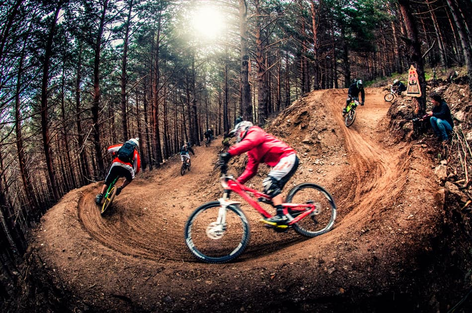
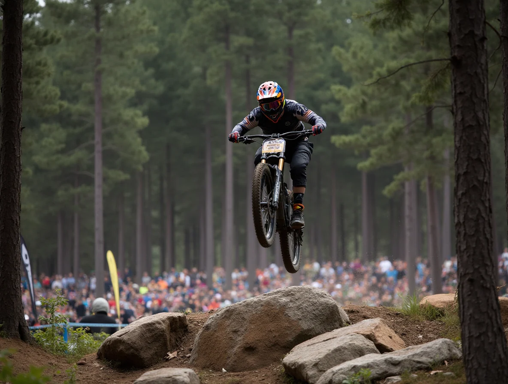

Galería Fotográfica y Contenido Multimedia
Explora nuestras mejores capturas en los senderos más desafiantes y disfruta del contenido audiovisual del descenso.

Pista Alta Montaña
Curvas cerradas y terreno suelto con máxima exigencia técnica.

Zona de Saltos
Vuelos prolongados y técnica de recepción en zonas de doble salto.

Jornada de Práctica
Preparación previa y revisión de líneas de descenso con el equipo.
Contenido Audiovisual
Visualiza el siguiente video representativo sobre la adrenalina y preparación en el ciclismo de descenso: